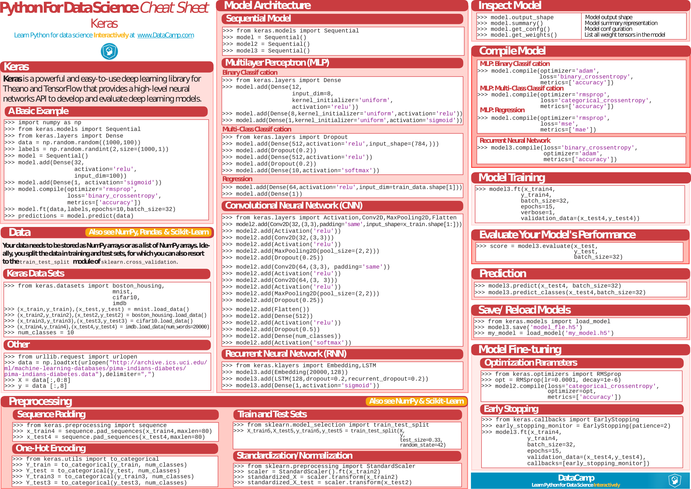
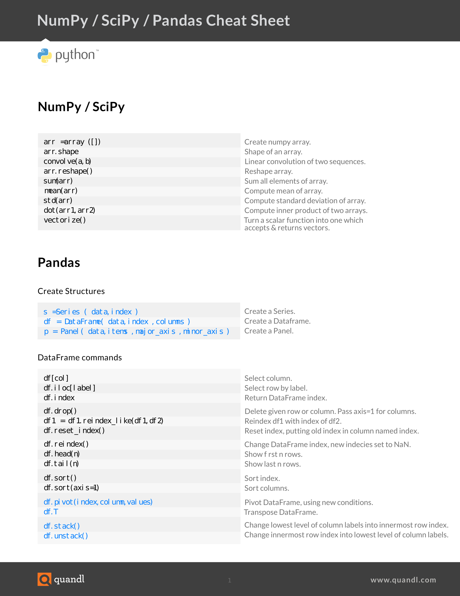
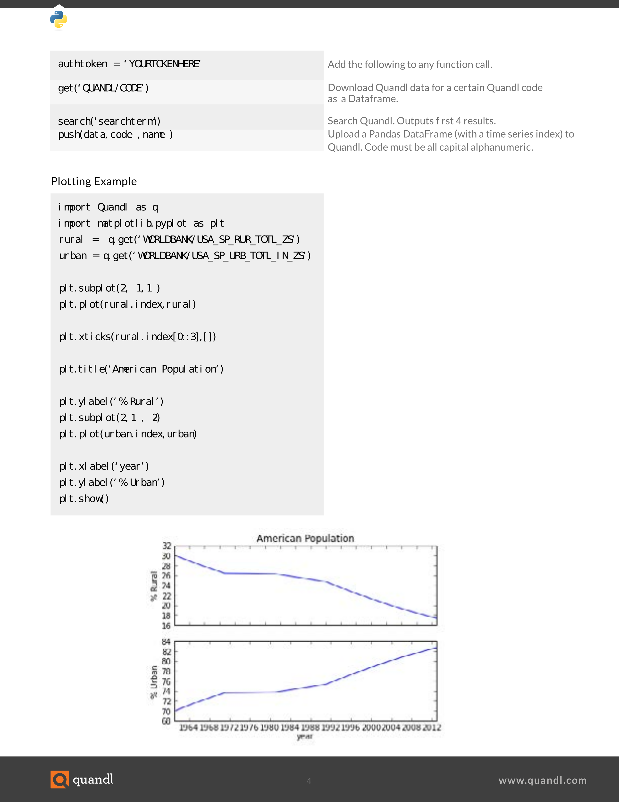
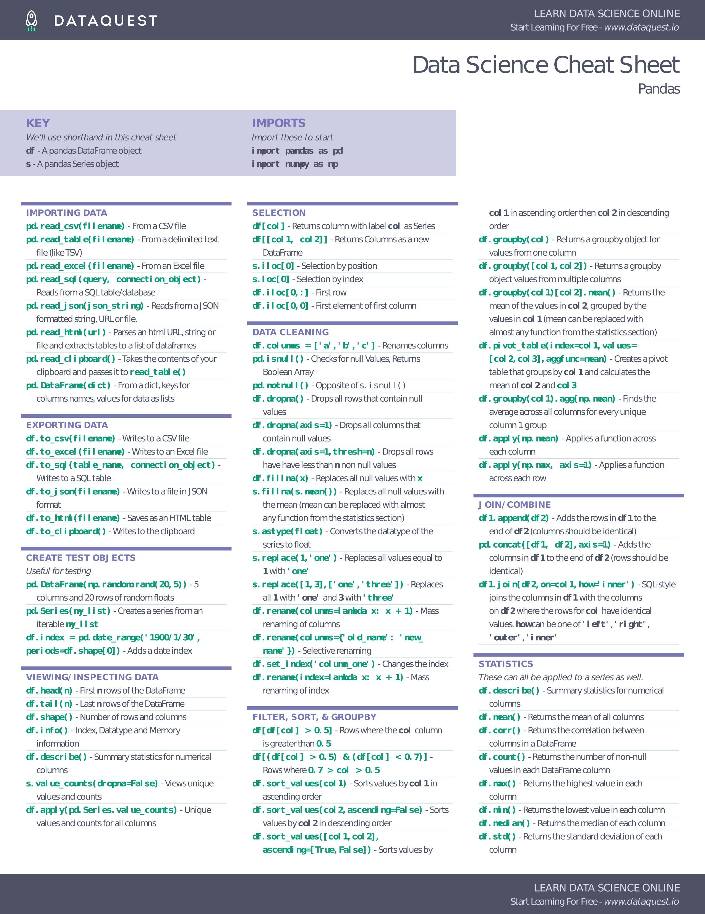
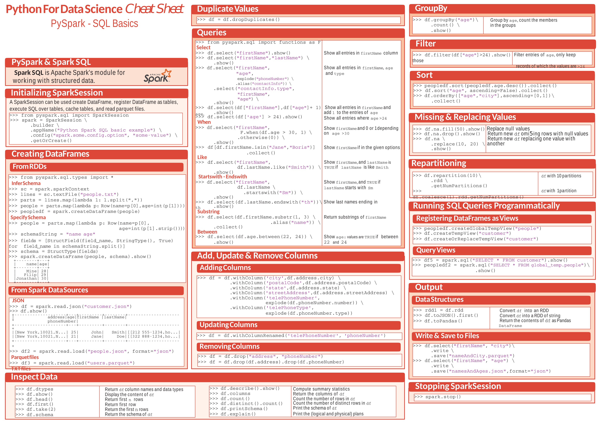
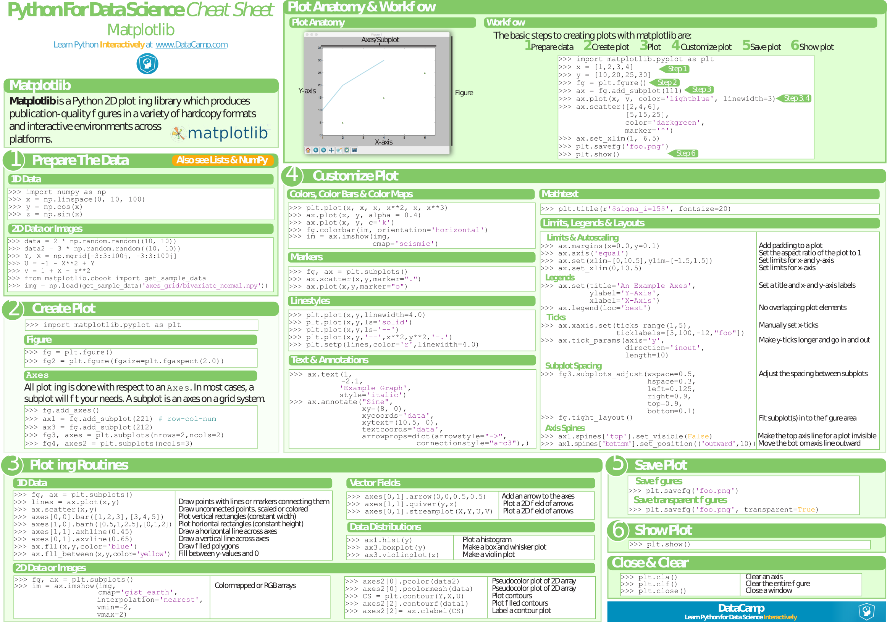
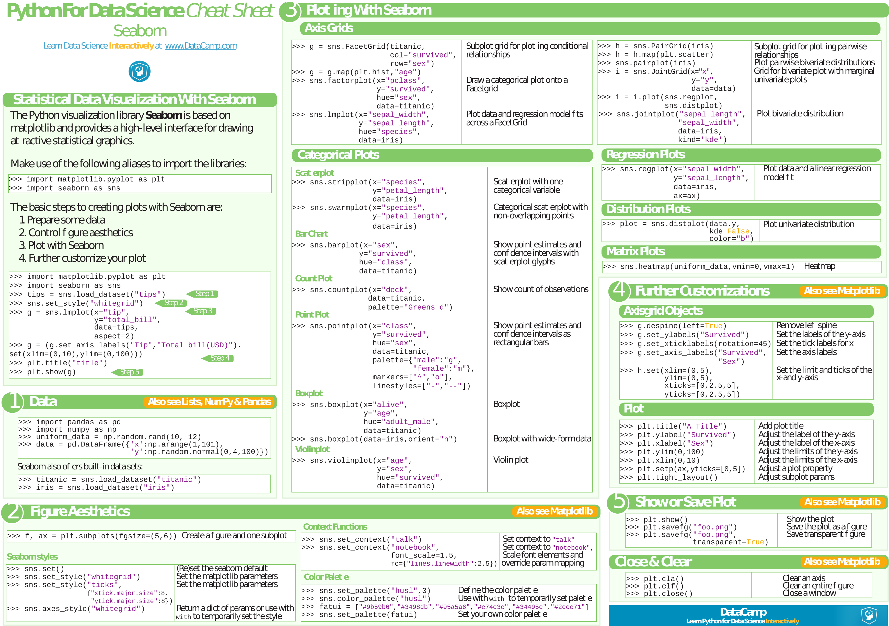

Scipy Stack Cheat Sheets
Data Mining¶
- Data Mining. PDF only.
Importing Data¶
- Importing Data. PDF.

Keras¶
- Keras. PDF.

Linear Algebra (with Numpy)¶
- Linear Algebra. PDF only.
- SciPy Linear Algebra. PDF.

Machine Learning¶
-
Machine Learning. PDF only.
- Supervised Learning;
- Unsupervised Learning;
- Deep Learning;
- Machine Learning Tips and Tricks;
- Probabilities and Statistics;
- Linear Algebra and Calculus.
-
Super pense-bête Machine Learning. PDF only.

- scikit-learn. PDF.

 .
.Numpy¶




- Numpy. PDF.

Pandas¶
- Pandas DataFrame Notes. PDF only.
- Pandas. PDF.

- Pandas. PDF.



Spark¶
- PySpark. PDF.

- PySpark SQL. PDF.

Visualization¶
Bokeh¶
- Bokeh. PDF.

Folium¶
- Folium. PDF.

Matplotlib¶
- Matplotlib Notes. PDF only.
- Matplotlib. PDF.

Plotly¶
- Plotly. PDF only.
Seaborn¶
- Seaborn. PDF.
